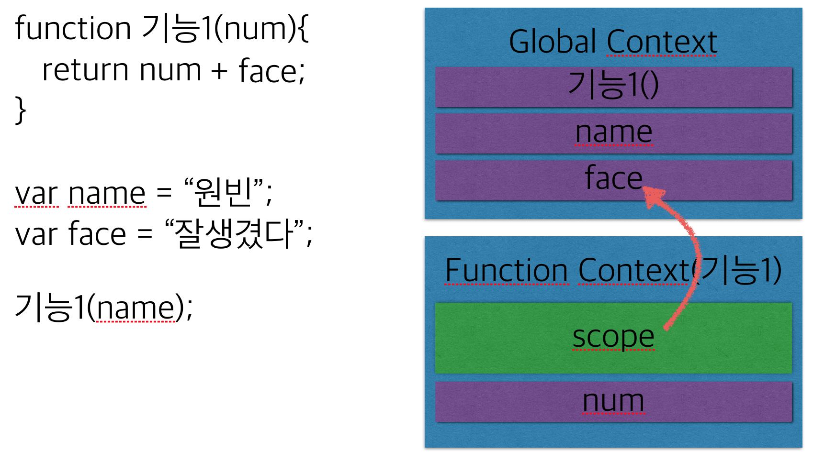
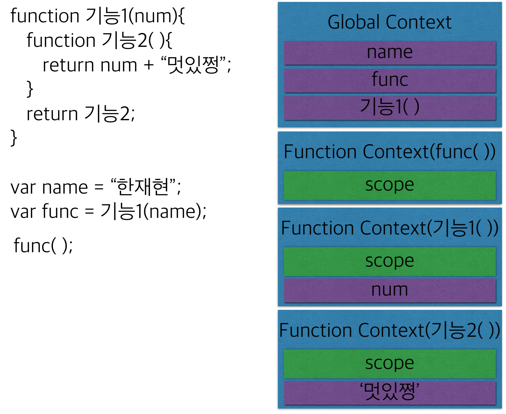

함수(Function)
1. 함수란?
-
function + 공백 + 함수이름 + 괄호 + 중괄호로 선언합니다.
function nothing(){ console.log('hi'); } -
함수 이름 뒤에 ( )를 넣어 실행하지만, ( )를 빼면 그냥 변수값이 됩니다. 그래서 ‘값’ 으로 복사된 함수도 똑같이 함수처럼 실행할 수 있습니다.
-
다른 모든 타입은 “값” 으로만 취급되지만 , 함수는 “값”이기도 한 동시에 “행동” 또는 “기능” 입니다.
-
여러차례 반복해야하는 코드 뭉치를 묶어서 하나의 이름으로 표현한것 이라고 할 수 있습니다.
===>function 라면끓이기( ){ 냄비에넣기(물500ml); 끓인다(); 냄비에넣기(면, 라면스프); 끓인다(); 불을끊다(); 그릇에담는다(); }function 라면끓이기( 물끓일시간 ){ 냄비에넣기(물500ml); 끓인다(); 냄비에넣기(면, 라면스프); 끓인다( 물끓일시간 ); 불을끊다(); 그릇에담는다(); } 라면끓이기( 2분 );--> 함수 이름 뒤의 괄호 에는 인수를 넣어 함수 내부의 특정 내용만 변경 할 수도 있습니다. -
함수 안에서 return 키워드를 사용하면 즉시 함수를 종료하고 return 뒤의 값을 밖으로 뺄 수 있습니다.
function double(num){ return num *2; } var result = double(4); console.log(result);
2. 함수를 만드는 여러가지 방법
-
생성자를 사용하는 방식
var func = new Function(‘value’, ’return result’ ); -
리터럴 방식
function func(value){ return result; } -
이름 없이 만드는 방식(익명 함수)
var func = function(value){ return result; } -
즉시 실행 함수(IIFE : Immediately Invoked Function Expressions)
(function(value){ return result; })();
3. 함수의 특징
1. 스코프 체인(Scope Chain)
함수를 실행하면 메모리에 함수만의 독립적인 실행공간이 만들어집니다. 그것을 Context라고 부릅니다. 이 때 변수와 함수의 scope(스코프)가 정해집니다.
스코프가 자신에게 없는 값을 찾아 부모를 타고 올라가는 현상을 스코프 체인이라고 합니다.
2. 클로져(Closure)
아래 코드를 보시면 내부에 있는 기능2()함수를 이용해 외부에 있는 func() 함수의 결과값을 리턴하고 있습니다.
자신이 만들어졌을 때의 Context를 기억하고 밖으로 나와있는 함수를 클로져라고 합니다.
3. 호이스팅(Hoisting)
자바스크립트 해석기는 함수 내에 있는 변수와 함수의 선언을 먼저 처리하는데, 이 때문에 선언이 함수 가장 앞에 있는 듯한 호이스팅(hoisting) 현상이 발생합니다.(hoist: 끌어 올리다.)
function outer(arg){
console.log(value);
function inner(){
return arg + ‘name’;
}
var value =‘Hello!’
return inner;
}
var func = outer(‘kim’);
변수 value는 9번째 줄에 선언되었지만 3번째 줄에서 value변수를 호출해도 에러가 나지 않습니다.
4. 스코프(Scope)
변수의 생존 범위를 말합니다.
ES5까지는 전역 스코프와 함수 스코프만 존재했지만, ES6로 오면서 let 키워드를 통해 선언된 변수는 블럭 스코프 라는 것을 가지게 됩니다.
if(true){
let val = ‘Hello’;
console.log(val);}
val;
let 키워드로 선언된 val변수는 자신을 둘러싼 중괄호 안에서만 사용될 수 있습니다.
5. 그밖의 특징
-
함수를 실행할 때, 함수 안에는 arguments라는 변수가 자동으로 만들어 집니다.
-
함수도 객체이기 때문에 .length 와 .name프로퍼티가 있습니다. func.length : 인수의 갯수(함수를 선언했을때 적어둔 인수의 갯수), func.name : 함수의 이름.
-
자바스크립트의 모든 타입 생성자는 함수입니다.
연산자
1. 비교연산자
비교연산자는 ==, === 기호의 양쪽에 있는 값을 비교하여 Boolean값을 반환합니다.
==기호의 경우 비슷해 보이는 값의 타입을 자동으로 변환시켜주기 때문에 좀 더 엄격한 === 기호의 사용을 권장합니다.
null == undefined
null === undefined
‘7’ == 7
‘7’ === 7
위의 코드를 실행하면 == 와 === 의 차이를 더 명확하게 알 수 있습니다.
2. 할당연산자
할당연산자 = 는 오른쪽의 값을 왼쪽으로 할당하고 할당된 값을 반환합니다.
name = ‘한재현’; ==> ‘한재현’
3. 부정연산자
부정연산자 !를 변수나 값 앞에 붙이면 반대의 Boolean값을 반환합니다.
4. 논리 AND연산자
논리 AND연산자 &&는 첫번째 falsy값 또는 마지막 truthy값을 반환합니다.
1 && 2 && 0 && '' ===> 0
1 && 4 && 6 && 'hi' ===> 'hi'
5. 논리 OR연산자
논리 OR연산자 ||는 첫번째 truthy값 또는 마지막 falsy값을 반환합니다.
1 || 2 || 0 || '' ===> 1
0 || '' || NaN || undefined ===> 'undefined'
function add(a, b){
if(typeof b === ‘undefined’){
b = a;
}
return a + b;}
add(10);
function add(a, b){
b = b || a;
return a + b;}
add(10);